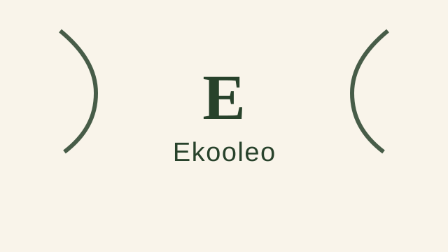
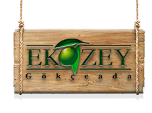
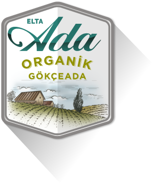
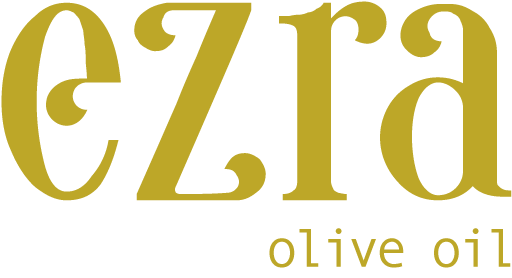
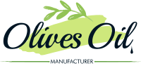

Organik
Organik sertifikalı, sürdürülebilir üretime odaklanan ve kimyasal kullanımını sınırlandıran markalar.
Organik odaklı zeytinyağı markaları, benzer bölgeler ve ilgili zeytin çeşitleri. 53 marka listesi.
Bu Sayfadaki Markalar
Alaboğaz
Alaboğaz, müşterilerine Milas bölgesindeki Memecik cinsi zeytinlerini erken hasat eden, soğuk sıkım yöntemiyle işleyip yüksek polifenollü natürel sızma Milas Zeytinyağı sağlayan bu...
Angelos
Angelos, İzmir çizgisinde organik üretim çizgisinde zeytinyağı sunan üretici olarak öne çıkar....
Aybal Organik
Aybal Organik, organik üretim çizgisinde zeytinyağı sunan üretici olarak dizine eklenmiştir....
Bilgem Zeytin
<p>Kuzey Ege’de Balıkesir, Burhaniye, Yunuslar Köyü yaylasında, kendi zeytinliğimizde yetişen, Organik Edremit/Ayvalık cinsi zeytinlerden elde edilen Natural Sızma Zeytinyağlar ...
Bumba Zeytinyağı
Organik sertifikalı zeytinyağı üreten marka. Kimyasal gübre ve ilaç kullanılmadan yetiştirilen zeytinlerden üretim yapar....
cnt organic
cnt organic, organik üretim çizgisinde zeytinyağı sunan üretici olarak dizine eklenmiştir....
Cömert
Ayvalık Zeytin Zeytinyağını Sadece Ayvalık Yöresi Zeytinlerden Elde Edip Yöremizin En Kaliteli Zeytin ve Zeytinyağını Siz Değerli Müşterilerimizin Beğenisine Sunmaktayız....
Çakırhan
Çakırhan, organik üretim çizgisinde zeytinyağı sunan üretici olarak dizine eklenmiştir....
Dizem Organik
Dizem Organik Zeytinyağları ile Kuzey Ege...
Edremit’in Zeytini
edremitinzeytini.com...
Edremith
Edremith® Doğal Organik Ürünler - Edremit Zeytinyağı, Zeytin, Ev Yapımı Doğal Organik Ürünler. Kazdağları'ndan Gelen Lezzet. Hemen sipariş verin kapınıza gelsin...
EFSUS
Tarsus ve Çukurova hattında bahçe ve tesis entegrasyonuyla üretim yapan üretici. Natürel sızma, naturel birinci ve sarı ulak zeytin ürünleri sunar....
Ege Masalı
Ege Masalı Organik Zeytinyağı, Ayvalık Zeytinyağı, Organik Zaytinyağı, Natural Zeytinyağı...

OrganikEkooleo
Organik sertifikalı natürel sızma zeytinyağı üreten marka. Ekolojik tarım ilkelerine bağlı üretim yapar....

OrganikEkozey
Gökçeada Şirinköy tesislerinde adanın doğal zeytinlerini soğuk sıkım yöntemiyle işleyen organik odaklı üretici....

OrganikElta Ada
2004 yılında Gökçeada’da kurulan çiftliğinde organik sertifikalı zeytinyağı üreten yerel üretici....
Erkan Aykan
Erkan Aykan Zeytincilik, Sızma Zeytinyağı, Soğuk Sıkım Zeytinyağı, Taş Baskı Zeytinyağı, Edremit Çizik Zeytin, Edremit Kırma Zeytin, Siyah Zeytin Çeşitleri Kredi Kartı ile ödeme ve...

OrganikEzra Olive Oil
Ezra Olive Oil...
Felovia
Zeytin'in peşinde olan bir macera: Felovia! Maceramızın mahsülü olan Zeytinyağlarımızı yemeklerinize taşıyın!...
Ferhatoğlu
Ferhatoğlu, Aydın, Ege çizgisinde organik üretim çizgisinde zeytinyağı sunan üretici olarak öne çıkar....
FİDELAND
FİDELAND, Burhaniye, Balıkesir çizgisinde organik üretim çizgisinde zeytinyağı sunan üretici olarak öne çıkar....
Giz Olive Oil
Organik üretim ile ilaçsız yetişen ve sadece kendimize ait zeytin bahçesinden ortalama yaşları 350 olan ölümsüz zeytin ağaçlarımızdan yaptığımız hasat ile zeytinyağımızı en saf hal...
Gödence
Gödence Tarımsal Kalkınma Kooperatifi şu anda dünya normlarında bir sanayi kuruluşu ile, zeytinyağı depolama tesislerine sahiptir. Zeytinyağının yanı sıra sabun, bal, reçel, pekmez...
Herbal Organik
Organik sertifikalı zeytinyağı ve doğal gıda ürünleri sunan marka. Organik tarım standartlarına uygun üretim yapar....
Herdan
Herdan, Edremit, Balıkesir çizgisinde organik üretim çizgisinde zeytinyağı sunan üretici olarak öne çıkar....
Hiç Urla
Öyle saftır ki zeytinyağı aslında `Hiçtir`. `Hiç` bir ek istemez, süsleme kabul etmez, olduğu haliyle, tüm doğanın gerçekliğinin aynasıdır....
Kairos Zeytinevi
Milas hattında organik, soğuk sıkım ve erken hasat zeytinyağları hazırlayan butik üretici. Şenköy çevresindeki zeytinlikler öne çıkar....
Kilye
Eceabat çıkışlı çiğ sızma ve organik natürel sızma zeytinyağı serileri sunan butik marka....
Köklü
Yılların verdiği tecrübeyle üstün lezzet ödüllü Ayvalık Zeytin ve Zeytinyağı firma Köklü Zeytincilik...
LENUS
LENUS, organik üretim çizgisinde zeytinyağı sunan üretici olarak dizine eklenmiştir....
Mazınköy
Mazınköy Zeytinyağı 1950’den beri Aydın dağlarında bulunan bahçelerimizdeki asırlık zeytin ağaçlarını, geleneksel tarım yöntemleriyle yetiştirip meyvelerini ileri teknoloji imkanla...
Meray
Aydın-Çine hattında organik tarım ve zeytinyağı üretimi yapan şirket. Organik sertifikasyon ve ihracat odaklı yapısıyla öne çıkar....
Midas
Sızma Zeytinyağı | Midas...
No 35 Urla
No 35 urla atelier Doğal, Katkısız Gıda Üretimi Urla. salça, zeytinyağı, reçel, zeytin, vişne reçeli, çilek reçeli, yusufçuk, no35urla, tarhana, lavanta, lavanta yağı, doğal ürünle...
OLIVNER
Kendi bahçemizin ürünleri naturel, organik ve erken hasat zeytin yağları....
Olivalley
Zeytinyağının en saf hali Olivalley’de! Ege’den sofranıza gelen ultra premium natürel sızma zeytinyağlarımızla kaliteyi keşfedin ve bünyenizi güçlendirin....
Olive Mama
Organik ve doğal zeytinyağı markası. Kadın girişimciler tarafından kurulan, sürdürülebilir tarım odaklı butik üretici....
Olizzi
Olizzi, organik üretim çizgisinde zeytinyağı sunan üretici olarak dizine eklenmiştir....
Plantgarde
Plantgarde – Dogal Zeytinyagi ve Organik Urunler...
Raya Organik
Organik üretim çizgisinde zeytin ve zeytinyağı ürünleri de sunan üretici. Doğal içerik ve sertifikalı üretim vurgusuyla öne çıkar....
Seferis
Seferihisar Ulamış çevresinde organik soğuk sıkım natürel sızma zeytinyağı sunan yerel üretici....
Seroliva
Seroliva, Zeytin Tutkusu Organik Sertifikalı, Düşük asitli Memecik, Kalamata, Domat cinsi zeytinlerden üstün lezzetli organik zeytinyağları üretir....
Tadın Tarifi
En iyi zeytini en iyi şartlarda alıp, en iyi şartlarda imalatını yaptırarak en kaliteli ürünü elde etmekteyiz....

OrganikTaha Kervan
Olive oil manufacturer produce olive oil under the brand Taha Kervan. We have been selling and exporting olive oil since 1977. Turkey Best Oil...
Tlos Olive
Zeytin ağacının ana özelliği ölümsüz olmasıdır. Tlos Olive...
Tuay
Organik natürel sızma zeytinyağı ve farklı seri sınıflandırmaları bulunan üretici. Ege zeytinlerini soğuk sıkım ve duyusal analiz vurgusuyla sunar....
Uzman Çiftlik
Uzman Çiftlik, Edremit, Balıkesir çizgisinde organik üretim çizgisinde zeytinyağı sunan üretici olarak öne çıkar....
Via Zeytinyağı
Ayvalık Zeytincilik...
Yerlim
Yerlim | Değirmen Çiftlik | Sertifikalı Organik Üretim | Organik Ürünler...
Z Organik
Z Organik, organik üretim çizgisinde zeytinyağı sunan üretici olarak dizine eklenmiştir....
Zavendik
Zavendik Zeytinyağı – Türkiye'nin AB Tescilli İlk Zeytinyağı...
Zeytinhouse
Zeytincilik sektöründe 25 yılı aşkın bilgi, birikim ve tecrübeden yola çıkarak İyi Üretici, Kaliteli Ürün ve Mutlu Tüketici mottosunu ilke edinerek zeytinhouse kurulmuştur....
Zeytinseli
Zeytinseli olarak Didim Aydın’da bulunan zeytinliklerimizden, organik zeytin ve organik zeytinyağı, erken hasat, soğuk sıkım zeytinyağı ve zeytinleri sizlerle buluşturuyoruz....